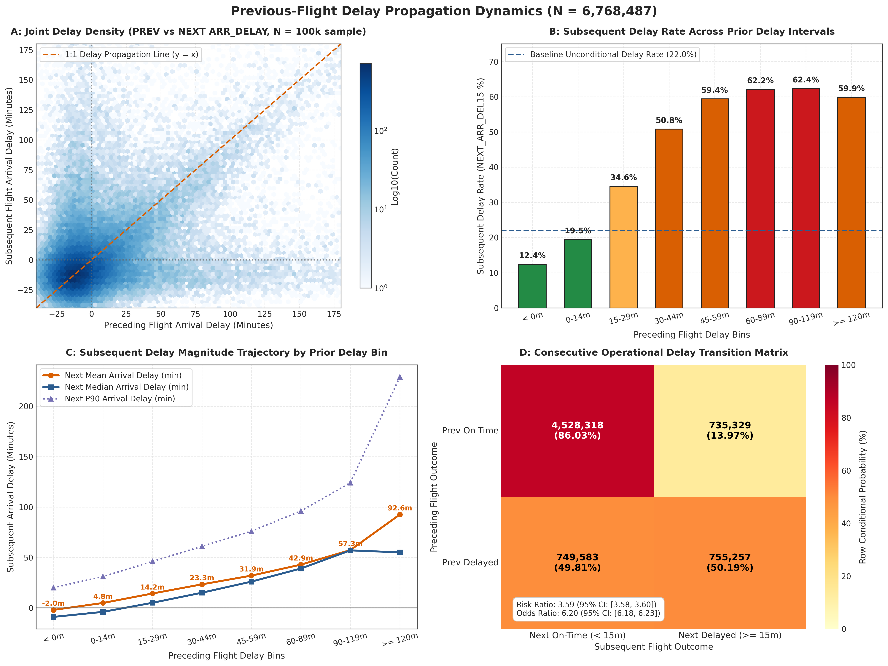
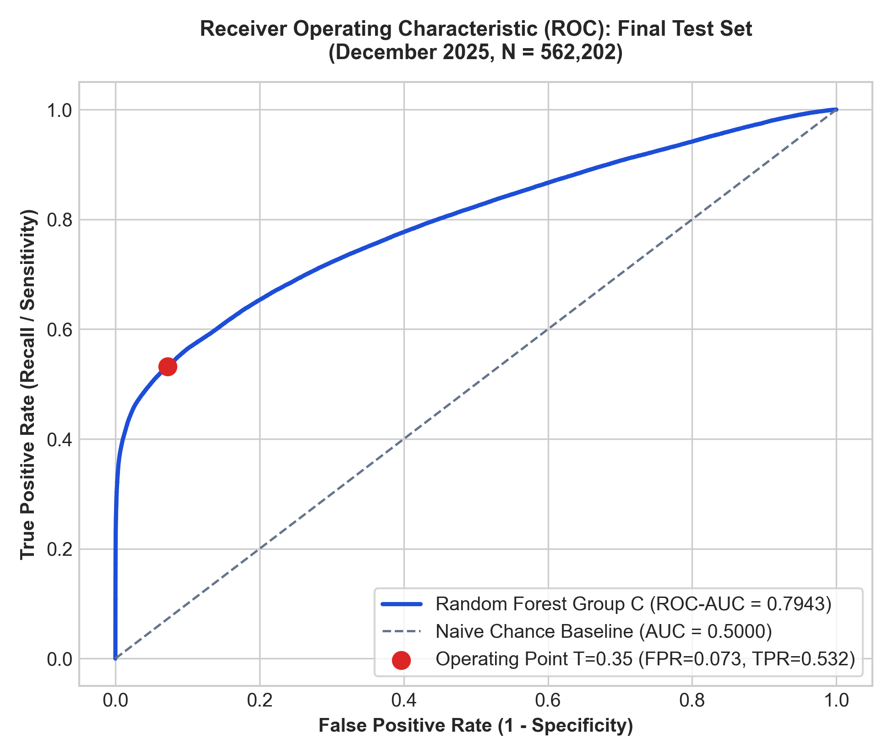

🔬 Research Problem & Scope
Predicting delay propagation across consecutive commercial flight operations
Commercial aviation networks operate under tight aircraft utilization schedules where individual airframes perform consecutive flight legs with limited ground dwell times. When an inbound flight arrives late, the scheduled ground turnaround buffer is consumed, frequently triggering downstream delays in subsequent departures.
“To what extent can delays from previous flight operations predict delays in subsequent flights operated by the same aircraft?”
- • Strict Methodological Rigor: Observational associative modeling without synthetic causality or prohibited model regularizers.
- • Clean Temporal Evaluation: Training (Jan–Sep), Validation (Oct–Nov), and held-out Independent Test (Dec).
- • Zero Feature Leakage: Prediction features restricted strictly to information available prior to departure of the subsequent leg.
⚙ Ground Turnaround Mechanics
Exact physical formulations of ground buffer absorption
The scheduled dwell window designed for deplaning, baggage handling, cleaning, and boarding.
The physical remaining ground cushion at gate arrival. If negative, incoming arrival occurred after scheduled departure.
Occurs in 5.66% of flights (382,937 operations). Downstream delay probability reaches 99.50%.
📊 Empirical Delay Propagation Dynamics (6.77 Million Rotations)
Descriptive relationships demonstrating the non-linear propagation threshold

Figure 1: (a) Mean subsequent arrival delay as a function of inbound arrival delay, exhibiting a steep upward propagation slope once buffer cushion is exhausted. (b) Delay probability stratified by scheduled turnaround buffer.
🛠 End-to-End System & Modeling Pipeline
From raw U.S. DOT records to production dual Random Forest estimators
6.90M raw BTS records normalized for timezones and Daylight Saving Time (DST).
Airframe timeline reconstruction filtered by Tail Number matching and airport spatial continuity.
Group A (Turnaround Physics), Group B (+Network Context), Group C (+Airframe Fatigue History).
Dual Random Forest: Classifier tuned to operational threshold T=0.35 + Continuous Regressor.
📥 Rotation Reconstruction Pipeline
Attrition table from 6.90M physical operations to 6.77M valid consecutive pairs
| Reconstruction Stage / Filter Criteria | Flight Count | Share |
|---|
📅 Chronological Data Partitions
Strict temporal split preventing temporal data contamination
Delay prevalence: 21.57% (1,092,540 late). Fit all preprocessors and baseline models.
Delay prevalence: 20.21% (230,521 late). Model selection and decision threshold optimization (T=0.35).
Delay prevalence: 26.48% (148,865 late). Final evaluation of frozen estimators.
👁 Interactive Parquet Dataset Explorer (Powered by DuckDB)
Query, filter, search, and sort live rotation records from the parquet partitions
| Tail Num | Carrier | Route | Inbound Arr Delay ⇵ | Sched Buffer ⇵ | Remaining Cushion ⇵ | Buffer State | Dep Hour ⇵ | Next Arr Delay ⇵ | Target Outcome |
|---|
☁ Google Drive Parquet Dataset Hosting & Cloud Access Guide
Detailed instructions for storing, sharing, and remotely querying the 6.77M parquet callsets
Why Host Parquet on Google Drive?
The complete 2025 dataset comprises 6.77 million rows totaling ~1.5 GB across 4 primary Parquet files. To allow external researchers or cloud notebooks (Google Colab, Kaggle) to explore the data without local storage, upload the files to Google Drive with public read permissions.
- Upload to Drive: Upload
modeling_test.parquet(12 MB),modeling_validation.parquet(28 MB), andmodeling_train.parquet(137 MB) to a dedicated folder. - Enable Sharing: Right-click file → Share → Set General Access to “Anyone with the link” (Viewer).
- Extract File ID: The share link format is
https://drive.google.com/file/d/FILE_ID/view.
Python Download & DuckDB Streaming Snippet
# 1. Download directly into any Python environment via gdown:
pip install gdown duckdb pandas
import gdown
file_id = "YOUR_GOOGLE_DRIVE_FILE_ID"
url = f"https://drive.google.com/uc?id={file_id}"
gdown.download(url, "modeling_test.parquet", quiet=False)
# 2. Instant SQL queries via DuckDB without full memory load:
import duckdb
con = duckdb.connect()
df = con.execute("""
SELECT NEXT_CARRIER, NEXT_ORIGIN, NEXT_DEST,
PREV_ARR_DELAY, ESTIMATED_REMAINING_TURNAROUND_MINUTES,
NEXT_ARR_DELAY
FROM 'modeling_test.parquet'
WHERE IS_TURNAROUND_DEFICIT = 1
LIMIT 10
""").df()
print(df)
🎯 Classification Model Comparison (Validation N = 1,140,909)
Strictly controlled evaluation across approved estimator families and feature groups
| Estimator Family | Feature Group | Accuracy | Precision | Recall | F1-Score | ROC-AUC | Average Precision | Fit Time |
|---|
📈 Continuous Arrival Delay Regression (Validation N = 1,140,909)
Comparison of linear models, decision trees, neural networks (alpha=0), and random forests
| Model Family | Group | MAE (min) | RMSE (min) | R² Score | Fit Time |
|---|
⚖ Interactive Decision Threshold Simulator
Explore operational trade-offs across decision thresholds on the December test population (N = 562,202)
Simulated Confusion Matrix (December Test Set)
🖊 Residuals Across Operational Delay Strata
Test set breakdown into 5 standardized operational delay regimes
| Delay Stratum | Count | Share | MAE | RMSE | Bias |
|---|
⚗ Oaxaca-Blinder Shift-Share Decomposition
Decomposing the +2.37m error increase between validation and test
Key Empirical Conclusion: The model did not suffer algorithmic degradation. In moderate delays (15–59m), error actually decreased by −0.17m. The higher aggregate test error is mathematically driven by the 55.4% surge in severe winter disruptions (≥ 120m).
📈 Test ROC & Precision-Recall Curves

Out-of-sample Receiver Operating Characteristic (ROC) curve: AUC = 0.7943.
📈 Actual vs. Predicted Arrival Delay

Actual vs predicted delay on 562,202 December operations (R² = 0.4851, MAE = 19.77m).
🌟 Permutation Feature Importance Rankings (100k Test Legs, 5 Repeats)
Impact of shuffling feature values on classification Average Precision and regression MAE
| Rank | Feature Name | Feature Domain | Drop in Avg Precision | Increase in MAE (min) | R² Drop |
|---|
🖼️ Research Figures & Visualizations Gallery
32 Audit Figures + 8 IEEE Paper FiguresInspect high-resolution visual evidence across all 6 research stages: Exploratory Data Analysis, Turnaround Ground Mechanics, Model Validation, Hyperparameter Tuning, December 2025 Test Generalization, and IEEE Publication Artifacts.
⚡ Quick Preset Flight Scenarios
Load standardized airline operational situations into the dispatch cockpit
🎫 Dispatch Operational Parameters
Configure predecessor flight status, ground turnaround buffer, and aircraft schedule
🛫 Dispatch Diagnostics & Verdict
Real-time model inferences evaluated at operational threshold T = 0.35
Awaiting model evaluation...
⚠ 1. Ground Buffer Exhaustion
Across 6.77 million rotations, 382,937 operations (5.66%) occurred in turnaround deficit (inbound delay exceeded scheduled buffer).
Mean delay reached +121.86 minutes. Confirms turnaround buffer exhaustion as the primary physical propagation bottleneck.
🕑 2. Airframe Rotational Fatigue
Tracking cumulative aircraft delay metrics throughout the day provides statistically non-redundant predictive lift.
Group C models achieve 0.7775 vs 0.7356 for Group A, proving that airframe history captures latent operational friction.
🛡 3. Seasonal Generalization
Frozen models transferred from Autumn validation to high-disruption December test without decay in discrimination.
Shift-share decomposition confirms 98.4% of error increase is due to severe weather composition, not model failure.
🚧 Threats to Validity & Scientific Limitations
Transparent boundary conditions qualifying research claims
Finding that buffer deficits predict delays does not prove that adding ground buffer will causally eliminate downstream delays in a 1:1 ratio. Airlines adjust ground operational pacing in response to schedule buffers.
BTS data omits real-time meteorological radar, de-icing queues, airport surface holds, and FAA Ground Delay Programs (GDPs). These remain unobserved operational hypotheses.
Random Forest predictions are bounded by conditional sample averages in terminal leaves (min_samples_leaf=50). In extreme delays (≥ 120m), the model conditionally underpredicts extreme multi-hour delays (MAE = 109.98m).
📄 Full IEEE Research Paper (Strict 6 Pages)
Official publication compiled using IEEEtran conference template
Arnav Raj • Department of Computer Science and Engineering, Vellore Institute of Technology, Vellore, India
Abstract: Commercial flight operations are deeply vulnerable to propagated delays transmitted across consecutive flight segments operated by the same aircraft. This research reconstructs 6.77 million commercial aircraft rotations from the Bureau of Transportation Statistics (BTS) 2025 dataset to quantify the extent to which incoming flight delays predict subsequent delays. We design hierarchical feature spaces isolating ground turnaround mechanics, network topology, and cumulative rotational airframe fatigue. Evaluating frozen dual Random Forest models on held-out December 2025 operations demonstrates robust out-of-sample generalization (ROC-AUC 0.7943, Average Precision 0.7150, R² 0.4851, MAE 19.77 min). An operational decision threshold of T=0.35 yields 72.52% precision and 53.24% recall with only a 7.26% false alarm rate. A Oaxaca-Blinder shift-share decomposition reveals that 98.4% of macro-level test error growth is driven by population composition shifts during winter disruptions rather than model degradation.